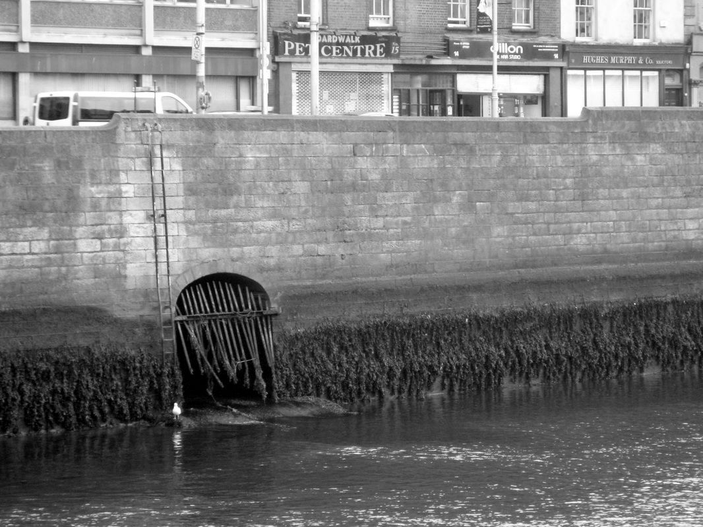
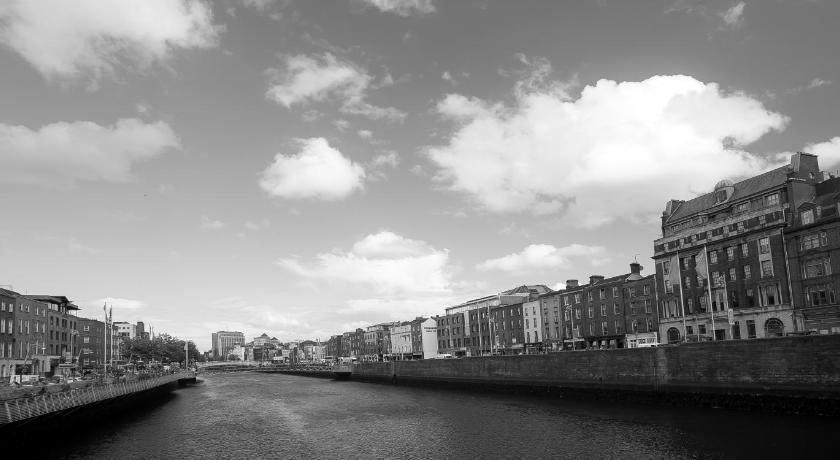
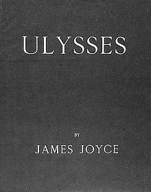

Stop 16 of 16 · Wellington Quay
Liffey Outfall
Journey’s end, under Wellington Quay.
The outfall
The Poddle’s journey ends here, flowing out under Wellington Quay into the Liffey through a grating in the quay wall, “an iron grid or portcullis”, as McEntee and Corcoran put it, “outside the Clarence Hotel”. The Liffey is tidal here, so at high tide the grating disappears under the water.
Interestingly the Geological Survey Ireland, in its report on the Poddle as a County Geological Site, describes the grating as worn and dirty and suggests replacing it with stainless steel, spelling out “Poddle” in steel letters on the quay wall, and putting an information board on the far bank so people can see where Dublin’s first river meets the Liffey. Maybe that’s something worth considering for the future!
Wellington Quay
Wellington Quay was the last of the Liffey quays to be built. Until the early 1800s the houses along this stretch backed straight onto the river, and Faden’s map of 1797 still shows the riverside closed off by buildings.
The Wide Streets Commissioners changed that. Between 1812 and 1815 they built a granite quay wall from Essex Bridge, now Grattan Bridge, to where the Ha’penny Bridge stands, to give the city a continuous quayside. Sources differ a little on the dates: one says the quay was built around 1812, another that it was laid out about 1815.
The western end was already called Custom House Quay, after Thomas Burgh’s Custom House of 1704 to 1707. Gandon’s new Custom House took over its work in 1791, the old building was used partly as a barracks from 1798, and it was pulled down as the new quay went in. The Clarence Hotel now stands on much of its site.
The quay is named after the Dublin-born Arthur Wellesley, 1st Duke of Wellington, after his victory over Napoleon at Waterloo in 1815, and it had its new name by 1817.
The National Inventory of Architectural Heritage describes the Poddle’s outfall as an elliptical-headed culvert in the face of the wall. The arch probably dates from the building of the wall, when the river had to be carried out to the new quay line, but we haven’t found a source that says so.
The Merchants’ Arch
On the new quay the Commissioners offered the Merchants’ Guild a site for a hall, on condition that a public right of way ran through it from Temple Bar to the Ha’penny Bridge. Frederick Darley designed the Merchants’ Hall, built in 1821 and 1822, and that passage is the Merchants’ Arch. It is one of only three guild halls left in the city.
The Ha’penny Bridge
At the east end of the quay is the Ha’penny Bridge. Before it was built, William Walsh ran seven ferries across the Liffey here. They were in such poor repair that he was told to fix them or build a bridge, and he chose the bridge.
It opened in May 1816 as the Wellington Bridge, cast in 18 sections at Coalbrookdale in Shropshire. In return Walsh could charge a halfpenny toll for 100 years, collected at turnstiles at each end. The toll was dropped in 1919, and the bridge’s official name has been the Liffey Bridge since 1922.
Standfast Dick
Under the water off the quay lies Standfast Dick, sometimes called Steadfast Dick, a reef of rock in the bed of the Liffey that ran roughly from below Dublin Castle to Capel Street. Smaller ships coming up to the old Custom House kept getting stuck on it.
In 1776 London ordered the channel deepened, and the Ballast Office set labourers “to quarry the bed of stones called Standfast near the Custom House”. They didn’t get all of it. In 1971 a newspaper reported that from the Wellington Quay wall at low tide you could still see the rock “extending far out into the bed of Anna Liffey”.
James Joyce knew it too. In a 1927 draft of the Anna Livia Plurabelle chapter of Finnegans Wake he wrote of “a rise every morning for Standfast Dick and a drop every minute for Stumblestone Davy”.
Ulysses
In James Joyce’s Ulysses the outfall is placed, wrongly, at Wood Quay, in words that are unflattering but memorable:
“From its sluice in Wood quay wall under Tom Devan’s office Poddle river hung out in fealty a tongue of liquid sewage.”
Watch and read
From the planning file
Facts from the flood scheme’s planning application and four local planning files.


